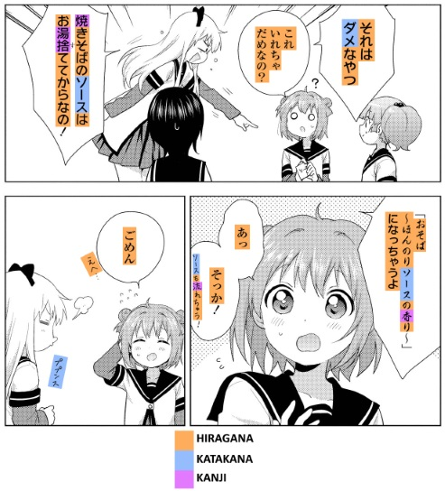

If you have any suggestions, corrections or general feedback, please use either the feedback guestbook or the Discord channel.
Live Google docs version found here
Traveling to Japan to talk with natives, watching raw anime, and reading manga and novels before they're translated all require the same fundamental skills and knowledge. While this guide is not going to be enough to teach you these skills, it will give you an idea of how to go about acquiring them.
With the basics covered in this guide you can get started with reading the written language, which you can then use to gain a more thorough understanding of Japanese. That being said, you should not hesitate to practice listening or speaking if you wish to do so. This guide only aims to introduce you to the Japanese language and show you how to get started. The rest is up to you.
The Japanese writing system consists of three scripts: hiragana, katakana and kanji.
Hiragana and katakana, together referred to as the kana, are two phonetic scripts, each containing 46 characters. They represent the same sounds, but are used for different purposes.
Hiragana (ひらがな) is used for grammatical parts and words which have no kanji form, or which the writer chooses not to use kanji for. Katakana (カタカナ) is used for loanwords and emphasis (similar to italics), among other purposes. For more information, see Tae Kim's articles on hiragana and katakana.
Hiragana will be your bread and butter for reading anything in Japanese. The approach to Japanese presented in this guide, as well as all the resources linked (except for those about the kana), are intended for people who can at least read hiragana. Thus, hiragana is the first thing that you are expected you learn.
Kanji are the third part of the Japanese writing system, and by far the most extensive. These logographic characters of varying complexity represent parts of words, or sometimes whole words. Japanese high school students are required to learn at least 2136 kanji as part of the curriculum, but up to around 3000 are used somewhat regularly in modern life.
The above is an example from the manga series ゆるゆり using hiragana, katakana and kanji.
Learning grammar is straightforward: Pick a grammar guide and read it. Tae Kim is often recommended for beginners (note that the whole guide is basic grammar, even the “advanced” section), but other options are listed on the resources page. You shouldn't expect to memorise everything you read the first time around in whatever guide you choose, but you should be aiming to understand it. The purpose of a grammar guide is not to grant you "mastery" over the language (which only comes through lots of practice and exposure), but simply to introduce you to the fundamentals of the language and give you the foundation that you need to start reading native material.
Once you've reached the end of the guide, you can start reading Japanese material while consulting back to the guide to solidify your memory. By reading Japanese you are actively practicing your grammar since you are using it constantly to understand what you are reading. Manga is the common recommendation for first getting into reading, especially よつばと！(Yotsubato) with the Yotsuba Reading Pack. You may also consider doing the Dictionary of Japanese Grammar Anki deck to reinforce what you have learned.
This isn't the end of grammar. Tae Kim should serve you fine for easy manga, but it only covers basic grammar. The Dictionaries of Japanese Grammar are the go-to resource for anything not covered in Tae Kim; they and various other options are documented in the resources section. If you're looking to reinforce or refresh what you learned in Tae Kim, then the Visualizing Japanese Grammar video series (written and presented by a native Japanese linguist) is an excellent resource.
Anki is a flashcard program that helps you acquire vocabulary through spaced repetition. It is commonly used in conjunction with the Core2K/6K vocabulary deck by beginners to build up a basic vocabulary of common words in preparation for reading. Many people stop the Core2K/6K deck after reaching 2000 words; partly because the first 2000 words (Core2K) are a lot more common than the rest, and partly because of the significant time investment involved in completing Core6K. As you can expect even Core2K to take about 3 months to complete, some prefer to skip it and begin reading native material immediately. Whether or not you feel that the time investment is worth it depends on your tolerance for looking up unknown words. After finishing Core2K, you'll at least be able to recognize the majority of words in a given sentence, but you will still have to look up many words per page.
After completing Core2K (or skipping it entirely), some people begin a "mining deck". A mining deck is a vocabulary deck which you build up yourself with the unknown words that you encounter while reading. The browser add-on Yomichan simplifies this process to a single click, so that all you need to do to add a card to your deck is hover over a word and click the + button in the popup.
You will need to learn all three writing systems to be able to read native material. Since hiragana and katakana are relatively small in number and simple in design, they can be learned through rote repetition in a short time-frame using a page like this. For kanji, however, because of their great number and complexity, there are various opinions on how to best approach them.
None of the methods described below are objectively superior to the others. The most important thing about any given method is not how "efficient" it is, but whether or not you enjoy it, or at the very least feel motivated enough to see it through to completion. Don't be afraid to try out different methods and see what works best for you.
There are two main ways to approach kanji. The simplest is to learn whole words without studying the individual kanji. The other is to study each kanji in isolation to learn its meaning and composition. Studying isolated kanji can grant you the ability to write by hand, and will likely make learning vocabulary easier. It's up to you to decide whether you'll benefit enough from learning kanji in isolation to merit the time and effort it takes.
Bear in mind that recognition and production are separate skills. Practicing one will make the other easier, but fluent recognition requires recognition practice, and the same goes for production if you wish to learn it.
If you choose not to study kanji in isolation, you will still learn to recognize their meanings and readings as you learn new words. Learning new words is something you need to do anyway, so many people skip individual kanji study altogether. Either approach will result in success so long as you persist, so the choice comes down to what method you personally find easier. If you don't want to study kanji, you can likely work through a vocab deck without doing so. But if you are slow to pick up on kanji while learning vocabulary or have poor retention, consider studying kanji individually.
The mnemonics method uses short stories or images to break down the kanji and make them easy to remember. Commonly used resources that encourage mnemonics are Remembering the Kanji, KanjiDamage and the Kodansha Kanji Learner's Course. Each has its own set of mnemonics and slightly distinct methods, so you should glance through each and pick whichever suits you — it's ultimately not that important. For more information and the necessary Anki decks, see the resource section below.
You can also study kanji in isolation without mnemonics by using an KKLC or RTK deck and ignoring the mnemonics — just be sure to learn the radicals that kanji are composed of first. The general consensus is that the readings for the characters are better acquired through vocabulary, so you should just focus on associating each kanji with its meaning.
For those who feel that methods like RTK and KanjiDamage take too much time, but don't feel confident diving head-first into kanji as with the kanji-through-vocab approach described above, one method to consider is simply dedicating a week or two to studying radicals - the 200 or so building-blocks which make up the kanji. This approach, rather than teaching you to write and recognise a set of ~2000 common kanji, gives your brain the information it needs to mentally deconstruct the kanji it encounters into their base components, which may make it easier for you to both learn to recognise them and to avoid mixing them up with other kanji which look similar. In any case, it should stop your brain from seeing them as simply a bunch of random squiggles. You can find an Anki deck here which contains all of the radicals, along with their meanings in English.
※ Look up a chart of hiragana and katakana (such as these: hiragana / katakana) and write each kana down a few times. You can practice with the kana page. Make sure that you have a firm grasp on hiragana before moving on the the next step. Katakana is also important, but it's fine to move on to the next step without having as firm of a grasp on katakana.
※ Core2K/6K is the generally recommended Anki deck for beginners who want to build up a basic vocabulary before they start reading. Learn how to use it from the Anki startup guide. You should also install Yomichan (Firefox/Chrome) or Rikaichamp (Firefox) or Rikaisama (Firefox pre-57+) , which will allow you to look up words by hovering over them.
※ If you wish to study kanji or radicals individually, pick one of the methods discussed above. You can do so either before starting vocab or at the same time, but you should try to finish up in a few months so you can focus on vocabulary.
※ Since you will probably be learning vocabulary alongside grammar, it is important that you pace yourself. This does not mean that you should not push yourself though. You can change the amount of new cards a day in Anki, but leave it at the default amount for the first few days and see how it suits you. Raise the amount of cards if you feel like you have headroom, and lower it if you feel overwhelmed (or just push yourself harder). Once you get into the swing of things, your total cards to review will be around ten times the amount of your new cards per day (so 20 new cards per day would mean about 200 reviews per day). You should set the upper limit for daily reviews in the deck options to the highest number possible, because failing to do all of your reviews on schedule will interfere with Anki's spaced-repetition-system. If you have trouble keeping up, lower the amount of new cards instead of limiting your reviews.
※ To learn grammar, Tae Kim's Grammar Guide is generally recommended due to its brevity (other options can be found in the Learning Resources section). Read the entire guide, including the "Advanced grammar" section - it's all actually basic Japanese grammar. If you are struggling to understand Tae Kim's explanation about a particular grammatical concept, look it up in the Dictionary of Japanese Grammar.
※ Once you have read through your chosen grammar guide, you are ready to start reading Japanese. While it's not necessary, reading will be easier if you have reached 1000–2000 words in Core2K/6K at this point (you will have to look up a lot of words anyway, but having a basic vocabulary will make it less painful). If you intend to start reading with Yotsubato, download the Yotsuba Reading Pack, which will introduce you to all of the vocabulary used in the first volume of Yotsuba; this is particularly helpful for slang and slurred speech that can't be looked up in a dictionary.
※ At this point most people start a mining deck. A mining deck is a vocabulary deck to which you add unfamiliar words that you encounter while reading. You can also continue with the Core deck if you like, but it makes sense to create a mining deck once you start reading. To make mining easier, use Yomichan's Anki integration, or Rikaisama's Anki integration, which allows you to create a new Anki card with a single click.
※ Read more. Reading will be slow in the beginning, but the more you practice the better you will get at it.
※ Enjoy compelling content.
A very long time.
Some will comment that, at a good pace, fluency is achievable in 4 years. Thinking in terms of “I have 4 years to become fluent” may help to prevent you from making the common beginner mistake of rushing, crashing and burning due to short term thinking (e.g. setting your new cards/day limit to 100 in Anki because you think it is taking too long to get through your deck, then finding yourself totally overwhelmed in a week's time and giving up).
Namasensei is often watched by beginners learning Japanese, because his alcohol-fueled antics are strangely both entertaining and powerfully motivating for some anons. Unfortunately, this is a double-edged sword; as he's always shitfaced drunk, tends to teach in an ineffective fashion, has terrible handwriting, and messes up the stroke order of some of the kana.
Set your search to google.co.jp for (much) better results.
Google 「X」, 「X」とは, or 「X」という言葉(の使い方) where X is your inquiry. 「ｘ」ってどういう意味, の意味 etc. also yields results.
Check out our great manga page, light novel page, found in the site main library.
For torrents, try Nyaa, Tokyo Toshokan, and GGBases
For popular closed-source Japanese P2P programs, try Share and Perfect Dark
Using your preferred search engine, search using the Japanese title in Japanese along with the keywords such as 漫画 zip rar, 一般小説 zip rar, 小説 青空文庫形式 txt
There are several ways to obtain raw anime. It may be noted that you can use hardsubbed (subs which you can’t turn off since they are on the video itself, not in a separate file) anime still, you’ll just have to cut off the lines where the subtitles are, which is a setting in VLC and probably many other video players. You can do this if you’re desperate and can’t find any raws. Explanation here.
Piracy groups often release encodings of anime called "dual-audio", which means that you get the Japanese Audio, English Audio, and English softsubs (opposite of hardsubs, which is what you want). You can then just switch to Japanese Audio and turn the subs off. Often some English sub releases are softsubbed as well (like the releases from a group called "HorribleSubs").
Manga is a bit less complicated but it can be tricky when you are trying to obtain all volumes. Often volumes get bundled if the series is longer.
Should you not find what you are looking for, you can try [japanese name of manga]zip or [japanese name of manga]rar, but then keep your head up in order not to be scammed. But usually, almost everything is on one of these sites.
Use a download manager such as JDownloader to download from the above to streamline the process.
To use JDownloader, you just copy the links to the file you want to download and it’ll find the files for you. For example, if it’s a mega link, just paste it into JDownloader. It can find a lot (you could also rip stuff from youtube that way, and so on, it’s pretty useful)
By default, it puts the files it found into a link collector in packages. You can move around stuff, delete links for stuff you don’t want, and mark certain things and right-click -> more options -> into a new package to put them in folders. By default, JDownloader saves into its folder (downloads/JDownloader, but you can change that) into a folder with the package name. Look through it, you can highly customize your results.
When you start to download something, just add it to to the download list and it’ll download. Many links can be continued from where they left off if you leave them; that’s marked by a circle made of two green arrows next to the download.
Searching google for 「ｘとｙの違い」or 「"x" "y" "違い"」 will usually find you the answer you're looking for. If you can't understand the answer you find, you aren't on a level where you should worry about the difference of x and y yet.
Alternatively, see if it is explained on the 間違いやすい言葉 page.
You can start reading as soon as you finish a grammar guide. Reading will be somewhat easier if you know 1000–2000 or so words, but you shouldn't delay it beyond that point. Your first attempt at reading will be difficult regardless of how many words you know.
The Dictionary of Basic Japanese Grammar has one of the best explanations on the matter and is relatively concise. A great (but very long) explanation can also be found in Making Sense of Japanese Grammar - What the Textbooks Don't Tell You (available in the library study resources page). I would refer to those, and take all others with a grain a salt or not at all.
Words only include the dictionary form. Proper nouns and compound words are excluded. For a different study addressing the related question of how many words you need to know to achieve adequate comprehension, see this image. (This won't directly correspond to the number of words you need to learn in Anki, since many words have obvious meanings and readings.)
They have the same English meaning. Which, in case you couldn't guess it, means you've gotta look it up in a J>J dictionary, or otherwise perform a Google search. If your grammar isn't at a level where you can understand the descriptions, or distinctions you should be bettering your grammar instead of your vocab. If you can only read English definitions, then assume they are flawed before assuming that you've been fucked.
Readings for words are usually clearly defined, and any of the dictionaries in the sections above will tell you how a word is read. For more in-depth information on readings, refer to this wikipedia entry.
Learning to recognise the meanings of a kanji does not equate to learning how to write it yet if you begin by studying only production, there will be times when you spot a character and think "Ah, I know this one!", but be unable to recall its meaning. In short, learning one skill will aid in learning the other, but to 'master' either skill requires dedicated practice of that skill.
What if you don't care about writing? It gives you a more intimate understanding of the kanji and will likely aid in your ability to distinguish similar looking characters and read messy fonts.
Importance here is ultimately subjective so ask yourself what matters and keep in mind that kanji study, unlike reading or listening, can be focused on at a later date without having a direct impediment on reading and listening comprehension.
Commonly recommended resources are marked with an ※. There is no "correct" way of learning, so you should try out the resources appropriate for your level and see which you feel are best.
An extensive collection of resources for download can be found here.
※ Kana page - Tests kana recognition. The recommended procedure for learning kana. Just grind until you know them. Optimal for pounding the readings into your head quickly.
Wikibooks - Has stroke order and other resources. The stroke order is quite useful, although the mnemonics are not so much.
Memrise - Offers various SRS courses including kana courses which are perhaps the only thing the site does well in regards to the Japanese language.
Remembering the Kana - It only takes about 6 hours to learn both hiragana and katakana alongside it because it provides mental images with the kana to ensure you remember. Download the book and/or follow this video series made by an RTK forum member.
Kana Warrior - A game designed to help you recognise the kana. Best used alongside another method.
Remembering the Kanji (RTK) by Heisig - A book that teaches kanji in an order based on the radicals of each character. It starts you off with simple shapes and gradually goes into more complex ones. It teaches stroke order and makes up pretty fancy mnemonic stories to help you memorize the kanji easier. It does not teach the readings until the second volume nor does it tell you how the kanji are used in context. (Most people do not use the second volume and instead learn readings through vocabulary.) As such, this method expects you to learn all the common characters before even getting started on learning vocabulary. Of course, you can still start learning vocabulary while doing Heisig.
KanjiDamage - Another kanji resource that uses a radical-based order. Unlike Heisig's method it also teaches the readings and gives you examples of common words that use those kanji (great for adding them to your Anki deck right away). Take the introduction on the site with a grain of salt, as it isn't very accurate, or is just plain wrong, as is the case with some other areas on the site, but that in no way makes this a bad resource in regards to learning. You may want to simply use the shared deck for Anki (see library study resources page) instead of the website in tandem with another vocabulary deck in order to build up a big cache of words quickly.
The Kodansha Kanji Learner's Course - KKLC follows in the RTK tradition but differs in several ways. Like RTK, it uses a mnemonic approach and teaches kanji components step by step. Unlike RTK, it teaches the most common kanji first, teaches their meanings through sample vocabulary rather than in isolation, and includes mnemonics for every kanji. (The RTK book stops providing pre-made mnemonics after the few first hundred kanji, but has a large number of community-made mnemonics available online.) Each entry includes 4 or 5 vocabulary words to illustrate the kanji's meanings and readings. These words consist only of previously learned kanji, so you can make sense of the words right away, and also get constant review of kanji studied earlier. Use it with an Anki deck such as this one. The author maintains a website here with information and supporting tools for KKLC users.
Kangxi Radicals - An Anki deck with more accurate meanings for the radicals than other available resources. Comes with only recognition-style cards (radical on the front, meaning on the back) by default, but you can change them to recall-style cards (meaning on the front, radical on the back), because the deck disambiguates variants.
For rote kanji study: Just pick whichever mnemonic deck (RTK/KKLC/KD) takes your fancy and edit the card layout to remove the mnemonics if necessary. The reason for this is that the mnemonic decks give much more concise meanings for the kanji, whereas rote decks often have far too many meanings to be realistically remembered for each kanji. It's worth doing a radical deck first so that if you encounter any kanji which you're really struggling to remember through rote, you can make up a mnemonic using the radicals.
Anki Shared Decks
This is highly recommended to learn vocabulary. Obviously, you will need Anki to use it. There are decks, you may search for them and see which one will best suit your needs. The most commonly recommended vocabulary deck is Core 2k/6k.
※ Yomichan's Anki integration - Yomichan has a companion Anki add-on called AnkiConnect which allows users to automatically create cards in Anki for the words which they hover over. Unlike with Rikaisama, this is done by clicking a button as opposed to pressing a hotkey.
※ Rikaisama's Anki Real-Time Import Feature - An invaluable tool for creating a mining deck. Allows you to automatically create cards in Anki simply by hovering over a word and pressing "r". Here is an explanation of how to set it up.
※ Tae Kim - This is the most commonly used guide on DJT because it is faster than the others listed here. Use the grammar guide, not the "complete guide" (which is incomplete). Tae Kim only has exercises in the beginning, after which there are no exercises to work on.
※ Japanese the Manga Way - This book teaches grammar through examples from actual Japanese manga, breaking down each sentence into its components to explain the meaning. It covers most of the same material as Tae Kim with less technical language, and will teach you enough grammar to begin reading.
※ Dictionaries of Japanese Grammar (DOJG) - A collection of three books, Basic, Intermediate and Advanced. As the name implies, these are dictionaries rather than guides. It goes in-depth into the various grammar rules, more so than virtually any other resource.
※ A Handbook of Japanese Grammar Patterns for Teachers and Learners (HJGP) - A grammar dictionary similar to the DoJG, but with broader coverage.
Genki - A textbook which has exercises that you can practice, which may help drill grammar rules into your mind. The obvious downside is speed, of course. This resource can be found on the bottom of the pastebin.
※ Visualizing Japanese Grammar - A series of videos by a native Japanese linguist who works as a university professor in the US whichthat lucidly explain the basics of Japanese grammar. Each grammar concept has a quiz to test your understanding. Some basic prior knowledge, is presumed, thus this resource should be seen as a supplement to something like Tae Kim, not a replacement. The videos can also be downloaded from the library study resources page .
Imabi - Written by a guy with a linguistics degree. More factually accurate and comprehensive than Tae Kim's guide, but its length and abundant use of linguistics terminology may make it unsuitable for complete beginners and/or people who would like to just quickly get basic grammar down and move onto reading. Those who plan on doing Core2K before they start reading, however, should have ample time (~3 months) to get through it before they finish that deck. While it has some flaws as a beginner's guide, it can be very useful as a reference resource, especially for things which aren't covered in Tae Kim's guide.
Japanese Pod 101 - A free (mostly) castpod-like teaching Japanese grammar, vocabulary and culture. There is a 1 week free-trial to pdf containing tips and other features, like flashcards with lesson's vocabulary. Good for storing in your phone and listening while in idle activities, buses, walks, etc. A large collection of lessons can be found here.
Sakubi - A guide that aims to be more precise than Tae Kim while using less academic language than Imabi.
Yotsuba Reading Pack - This pack is designed for beginners who have just started reading. This is an accompaniment to the first two volumes of Yotsubato. This includes a vocabulary list and a pre-made Anki deck. Yotsubato! is a manga that is often recommended to beginners. Note that, if you don't want to do the deck, following along the HTML file is still very helpful for slang.
Reajer - A range of bilingual Japanese and English text divided into different categories of difficulty. Texts are annotated with useful grammar and usage notes from a translator.
Sayonara Zetsubou Sensei - A partial transcript of the first volume of the beginner-friendly manga Sayonara Zetsubou Sensei, to make looking up words easy.
Aozora - This site contains a collection of (mostly) Classic Japanese literature. This site is mainly for advanced readers and not recommended for beginners. Here's some good recommendations of famous Japanese authors. You can also find many of these words on the site, some of them with audio
Narou.rb - this program is a a full-fledged downloader\library for a bunch of webnovel sites into EPUB and MOBI. Popular sites such as 小説家になろう and カクヨム are used as sources.
Asenheim - Another site for playing visual novels. Features older, officially released Visual novels.
悪戯図書館 - The site library has a small section with download links.
Kitsunekko - This site has a selection of Japanese subtitles for popular (anime) shows. The timing often does not match up with most available downloads, but you can try to retime it in a subtitle editing program or just look at it in the editor to compare with what you hear. There is a spreadsheet with shows and their subtitle delay, please fill in whatever you find out while using Japanese subtitles.
Voracious - Voracious is a video player app for Mac/Windows/Linux with special features for studying foreign languages (esp. Japanese). The program allows you to scan and browse your media collection, automatically generate furigana and quickly display dictionary definitions. Epwing dictionaries are supported. The program also has functionality to automate the generation of Anki cards.
Animelon - Stream anime with Japanese subtitles.
D-Addicts - This is a great site to find dorama with subtitles.
Mov3 - A Chinese streaming site specializing in Japanese TV.
Lang-8 - Here, you can write journal entries which are corrected by Japanese natives, and in return, you correct theirs. This is a great way to increase your writing/production ability and also meet people to talk to.
! Not currently accepting sign-ups. !
Jpopsuki - Great place to get and find any Japanese/Asian music, not just jpop. Requires that you get an account by either applying for one, or by having someone invite you. Sometimes you might be able to ask for a referral either in the threads or on /mu/.
Skypech - Here's a site for finding some natives on Skype to talk to. This a Japanese site for Japanese people, so do not misunderstand and think that everyone here has an interest in learning English.
Niconico - A site with lots of Japanese videos and also a section for streamers if you want to see what a native sounds like. Ideal if you don't want to actually commit to interacting with another person.
YouTube - As a result of the Virtual YouTuber (バーチャルユーチューバー) craze started by Kizuna Ai (A.I.Channel / A.I.Games), you can now find quite a lot of Japanese people on YouTube making Virtual YouTuber videos. There are various types of channels, with some focused on short videos about random subjects, others focused on video games, and some focused on live streams, though it's not uncommon for channels combine all 3 types of content to some degree. Of particular benefit to learners is that many Virtual YouTuber videos have Japanese subtitles as an option you can enable (many also have English subtitles but you will want to disable those if you actually want to learn anything, obviously). Besides Kizuna Ai's channel linked above, here are a few others to get you started: Kaguya Luna, Nekomiya Hinata, Nora Cat, Mirai Akari, Siro, Tokino Sora. You can find more here.
Radio shows provide a variety of themes and people speaking. But people also speak at a natural or even fast pace. Recommended for advanced listeners or people simply interested in listening to radio. One of the only means of hearing (and practicing listening to) genuine, conversational Japanese without actually going to Japan.
Radio stations from prefectures where the West Kanto dialects (西関東方言) are spoken with the Tokyo-style pitch accent (東京式アクセント):
Radio stations from prefectures where the West Kanto dialects (西関東方言) are partially spoken with a mix of pitch accents:
Japanese radio stations from other regions
Note: Many online Japanese radios are region locked and cannot be accessed without a Japanese IP address. This includes the NHK radio and any online radio station which broadcasts via radiko.jp (the site where most major broadcasters like TBS, MBS and ABC host their online radio; many of the radios which appear on the TuneIn pages linked above are not actually hosted on the site and are just links to radiko.jp pages). The region lock on radiko.jp appears to extend even to geographic areas of Japan (meaning someone from Osaka cannot listen to radios from Hokkaido, etc.), though this lock can apparently be circumvented by purchasing a premium account on the site (assuming you can even use a premium account from a non-Japanese IP, which I'm not sure about). Using a VPN which can give you a Japanese IP address would allow you to circumvent region locks across all Japanese websites, but in the case of radiko.jp it seems that you would only gain access to radios in the vicinity of your Japanese IP address.
Podcasts
sokoani (そこ☆あに) - A long-running Japanese podcast about anime. There are over 500 episodes constituting approximately 450 hours (and 10.7 GB) of listening material. Using wget, it is possible to automate the process of downloading all the episodes with the following command:
wget http://podcast.sokoani.com/SA/mp3/s{001..501}.mp3
(adjust the 501 number to match whatever the current number of episodes is)
There are also a number of special episodes (そこあに増刊号) which can be downloaded with the following command:
wget http://podcast.sokoani.com/SA/mp3/z{001..038}.mp3
(again, adjust the final number to match the current number of episodes - note that episode 7 is split into two parts so this command will fail to download those; you will need to individually wget z007-1.mp3 and z007-2.mp3 for episode 7)
The Voice (ザ・ボイス) - A frequently updated political podcast running since 2012, with a grand total of 1205 episodes at the time of writing (Oct. 2017). I estimate that there is somewhere around 700 hours of listening material here. The guests on the podcast are mostly male speakers who speak very quickly, so prepare yourself for a challenge. The best way to download the episodes seems to be from the RSS feed with a download manager like DownThemAll (total size of all current episodes is 29.3 GB). Don't try to wget the URL range like with the sokoani podcast above, else you will end up downloading episodes of every other podcast on the site in the process.
More podcasts here, here and here.
Namasensei's Japanese lessons (YouTube) - Covers fairly little material but is a fun and very motivating introduction to the language for people who are just starting out. You bitch.
Steve Kaufmann (YouTube) - Channel maintained by a Canadian polyglot who knows about a dozen languages and lived in Japan for close to 10 years. Contains lots of useful tips for language learning in general. Some recommended videos: 1, 2, 3
nihongonomori (YouTube) - Channel apparently run by a group of Koreans with a bunch of video lessons on Japanese. Quite a lot of them seem to be related to studying for the JLPT exams. According to the anon who suggested the channel "[the] Learn Japanese Grammar 1 playlist is ok. It has a better explanation of particles than [Tae Kim's guide], but the stuff on verbs & adjectives are not given enough time."
Let's Learn Japanese Basic I / Basic II - A video series produced by The Japan Foundation, the first season in the mid-1980s, and the second season 10 years later. Apparently covers similar material to what can be found in Genki and Tae Kim's guide.
Dogen: Japanese Phonetics - A series of videos explaining Japanese pitch accent and pronunciation.
Langfocus (YouTube) - A channel run by a Canadian polyglot living in Japan which, as the name suggests, focuses on various different languages. There is a video on the channel about the history and structure of the Japanese language which would serve as a very good introduction for someone just starting out.
Input Method Editor (IME) - It will allow you to type in Japanese using your keyboard. Required.
(Note: Both Mac and Windows have IME's already pre-installed but it's not as featureful as Google IME.)
※ Google IME (Windows, Mac OS, Android) - Google IME generally includes a larger collection of words, inclusive of internet slang. The downside, however, is that its handwriting recognition is rather lacking (see "sljfaq" below). To switch between romaji and kana press alt+` (just above tab key). Ctrl + Caps Lock for hiragana, hold shift while in hiragana mode to type in katakana. Alt + Caps is katakana. Shift + Caps reverts back to hiragana. This does not affect Caps Lock. You can also press F7 after typing something in hiragana to switch it to katakana without changing mode. Protip: Type in kaomoji and hit space. Alternatively: read this article.
Mozc (Chromium OS, Android, Windows, Mac OS, GNU/Linux) - This is a project that stems from Google IME. Unlike Google IME, it does not have a function to report "user metrics" to Google and is available on a greater number of operating systems, but it is missing some features which Google IME has and there is no binary installer provided so Windows users must compile it from source (users of any of the more well-known Linux distros should be able to install it from their distro's repositories).
If you have any trouble with Mozc for GNU/Linux read this.
Packages also exist in Fedora, Debian, GNU/Linux Mint, and. For Arch, it‘s available in the AUR.
iBus - (GNU/Linux) - An IMF through which to use IMEs (e.g. Mozc). If you use (K/X/L)Ubuntu, you probably already have it. You just need to install the Japanese IME packages using the language support in the settings and select iBus as your keyboard input method system. You can select the keys to press to change the keyboard layout or do it manually using the icon on the panel. For the rest of us that don't use Ubuntu or its variants, you can probably find iBus in the official repositories of your distribution. You can make iBus autostart when you boot by adding ibus-daemon to your ~/.xinitrc. And you will probably want to add & to the end, ala: ibus-daemon & (also your windows manager might have it's own autostart file, use that instead) that you can find in your Home folder.
Flashcard software. Also available for mobile.
※ Anki - Anki is a flashcard program which uses a method called spaced repetition to drill information into your head. It shows you a set amount of new cards each day (default 20) and will show you the same cards again when you are most likely to forget them, which is predicted through algorithms. This program has a lot of features that can't be covered here, so Read The Fucking Manual if you wish to totally utilize Anki. You can also get this on your mobile device and sync your deck between both versions. The official App Store version costs money (to support the devs) so you might just want to use Safari in that case instead.
There are programs and add-ons that further increase its usefulness, such as:
The Anki website has many other official community addons.
If you use GNU/Linux and you want to change the size of the Japanese characters, you need to install the appropriate Japanese fonts, if you don't have them. Two high-quality fonts which should be available in the repositories of most distros are the IPA Gothic & Mincho fonts developed by Japan's Information-technology Promotion Agency (the package in your distro's repo should come with proportional variants, IPAPGothic and IPAPMincho respectively, which have kerning and thus should be more visually-pleasing), and the Noto CJK fonts developed by Google (note that the latin glyphs in the Noto CJK font are different from those in the ordinary Noto font). Even Windows users should consider switching to these fonts as Microsoft's own Gothic and Mincho fonts are quite poor. For more fonts, see the library study resources page.
Anki is highly customizable, and you may change whatever you see fit to match your learning style, but for a quick start into learning vocabulary with Anki, the procedure in the Anki startup guide is recommended.
Core6K/10K/5K index - This site lets you browse the contents of various popular Anki decks online.
Use these to look up words. Jisho and Tangorin also have kanji lookup.
※ Yomichan - (Firefox & Chrome) - A browser add-on like Rikaisama which allows the user to hover over words in order to see their meanings. By default, its behaviour is quite different from Rikaisama's, though it can be configured to behave in a similar manner by disabling the "Middle mouse button scans" option and setting the "Scan modifier key" to "None" (it is recommended if you do this to set the "Popup offset" option to either 0 or 1, else it will become very difficult to mouse into the popup before it automatically disappears). After installation, you need to import JMDict in Yomichan's settings by clicking the arrow next to the input box under the "Dictionaries" section. Has a companion Anki add-on called AnkiConnect which allows users to automatically add words they hover over to their Anki deck. Can be used as an offline dictionary by clicking the Yomichan browser icon and then clicking the magnifying glass button which appears in the pop-up menu.
※ Rikaisama - (Firefox) - This is a tool that shows you equivalent or close meanings (in English) of Japanese words in plaintext format, by hovering over them. Has many useful features such as audio playback and the ability to save words to a file or import it straight into Anki. Note: Rikaisama is abandonware and no longer works in Firefox since version 57.
Rikaikun - (Chrome) - Essentially an inferior clone of Rikaichan, but still serviceable enough if you just can't let go of the botnet. No Anki import feature.
Rikaichamp - (Firefox) - A port of Rikaikun for Firefox which, unlike Rikaichan and Rikaisama, works with Firefox's new add-on API. If you don't like Yomichan for some reason and you can live without Anki integration, audio, EPWING support, etc., then you can give this a try instead. Feature-wise, basically the only thing it can do is show definitions of words and kanji from EDICT and KANJIDIC respectively.
※ Jisho - Online J>E/E>J dictionary. It also contains information on kanji including a order, readings, etc. You can also search a kanji by handwriting or its radicals if you don't know the correct stroke order.
※ Weblio - Principally a Japanese to English lookup resource, and consequently a decent source for Japanese > English phrases. Also has a J-J version .
goo辞書 - Similar to Weblio. Also has a J-J version. I believe all of its J-E results and example sentences are taken from the professionally-created プログレッシブ和英中辞典 (Progressive Japanese-English Medium-Size Dictionary), so you can probably trust them to be correct.
※ Kenkyusha J-E Dictionary - To quote Wikipedia: "Has long been the largest and most authoritative Japanese-English dictionary. Translators, scholars, and specialists who use the Japanese language affectionately refer to this dictionary as the Green Goddess or (GG) because of its distinctive dark-green cover. The fifth edition [...] published in 2003 [comprises] almost 3,000 pages; it contains about 480,000 entries (including 130,000 Japanese headwords, 100,000 compound words, and 250,000 example phrases and sentences), nearly all of which are accompanied by English translations." Download the EPWING version and read it with EPWING viewers like qolibri.
Kojien J-J Dictionary - The Oxford Dictionary of Japanese dictionaries. To quote Wikipedia: "It is widely regarded as the most authoritative dictionary of Japanese, and newspaper editorials frequently cite its definitions." Contains not only definitions of words, but also meanings and explanations of kanji along with their stroke orders. The 6th edition (2008) includes approximately 240,000 headwords. Note that some of its example sentences come from classical Japanese texts. Download the EPWING version and read it with EPWING viewers like qolibri.
Daijirin J-J Dictionary - Another authoritative Japanese dictionary, prefered by some to Kojien. To quote Wikipedia: "specifically created [...] to compete with Iwanami's profitable Koujien dictionary[...] One of the biggest differences between Daijirin and Koujien definitions is how they arrange meanings. A dictionary can arrange entries either historically with the oldest recorded meanings first (e.g., Koujien and Oxford English Dictionary) or popularly with the most common meanings first (e.g., Daijirin and American Heritage Dictionary). Daijirin entries encompass diverse vocabulary, including modern and classical Japanese words, scientific terminology, proper names, alphabetical abbreviations (like NG "no good; outtake, blooper"), and yojijukugo idioms. Some definitions include semantic notes distinguishing homonyms and synonyms." Currently in its 3rd edition (2006) which contains 238,000 entries. Note that some of its example sentences come from classical Japanese texts. Available online for free provided by Yahoo (also contains definitions from other dictionaries besides Daijirin, such as Daijisen - the definition page in question will say which dictionary it is giving the definition from). The EPWING version can be read with EPWING viewers like qolibri.
JEdict - An offline dictionary application. Contains various dictionaries (you can download and add more) and handwritten Kanji lookup. It seems that it's only available for Mac.
Tagaini Jisho - another offline dictionary program. Contains lots of functionality, including kanjivg stroke orders, much like Jisho.org
ichi.moe - Like a dictionary but with the ablity to split entire sentences into words.
Gogen - An etymological dictionary in Japanese.
Jaded Sound Effects Dictionary - English translations of manga SFX.
qolibri - Probably the best program for reading/searching EPWING dictionaries. Available on Windows, Mac and Linux, though Linux users are better off running the Windows binary via Wine than trying to compile qolibri from source as the most recent version of the program is almost 10 years old and thus depends on long-obsolete software in order to build and run. See here for alternative programs.
Use these to look up kanji.
※ Jisho Kanji - Jisho is an online J-E/E-J dictionary but it also has a powerful kanji lookup tool, including the ability to handwrite kanji or select by radical. Select the "Draw" button to the far left of the search box to prompt an intuitive dropdown box. Kanji will automatically propagate based on strokes drawn. The radical search function, second to the left of the search bar, will show kanji made up of the radicals selected.
※ Google Translate - Handwritten kanji lookup. Select Japanese and push the pencil button. No matter what kind of abomination you draw, google will recognize it. Amount of strokes and the order in which they are placed is irrelevant, just vaguely sketch what you want to look up and google will recognize it. Unparalleled when it comes to handwriting recognition.
Google translate is a piece of shit when it comes to translating Japanese syntax. Don't use it for that.
Kanji Stroke Order Font A font that shows the stroke order for kanji. Here is a guide on how to set-up Rikaichan to use it. Not always correct, so be careful. Kakijun is a great website for checking the proper stroke order.
sljfaq - Handwritten kanji search. Just draw the kanji using the correct stroke order and a list of possible kanji will appear. The results will link you to the WWWJDIC project by default, which is where the data for Jisho and most other online Japanese dictionaries comes from. You can go through the options page to redirect to your preferred service. What's nice about this is that it saves your writing so it will still be there even if you close the page.
Multiradical kanji search - Search kanji by radicals.
※ Typhon - an .epub file ebook reader for Android. Provides dictionary lookups for selected words, with the ability to generate Ankidroid card on the fly. Supports EPWING dictionaries. For further information, see the project development page here.
※ Guide to Convert Aozora Bunko Text Files into Mobi Ebooks and Guide to Convert Mobi Ebooks into Searchable AZW3 Ebooks - two guides very useful for anybody who wants to read Japanese books on their Kindle or other e-reader that accepts books in azw3 format. Using them you can convert txt /mobi file into a searchable e-reader format (Kindle has a free Japanese dictionary available, you can also find some other dictionaries on the Internet and add them to your e-reader).
※ JNovel Formatter- Breaks down a .txt into bite-size (your choice of length) chunks and converts it to html. Makes the task of reading LN's less daunting. a utility that will convert Japanese novels (in .txt) to nicely formatted HTML files. It enables you to use text hookers (Rikaisama, Rikaichan) while reading LNs/novels. A massive collection of .txt books can be found in the text and scan section of the novel section of the site library ('400+MB assorted books txt file format'). Smaller collections are available in azw3 and html.
NHK Easy News for Kindle - A script that downloads the day's news from NHK Easy News and converts it to MOBI or PDF format for your e-reader. Download automatically generated files here.
※ KanjiTomo - This is an Optical Character Recognition (OCR) software. Scans for words on your screen and tells you what they are and what they mean. Essentially, it's like Rikaisama/Yomichan but works on images too instead of just plain text. Success rate varies widely based on image / character quality. Highly recommended for reading manga and light novels.
$ java -jar /path/to/KanjiTomo.jar -runTo prevent KanjiTomo from stealing the window focus, change the following setting in the config file:
DISABLE_KEEP_ON_TOP=1To manually update the outdated version of EDICT2, download this .gz file. Then unzip the archive and drop the edict2 file under
data > dictionary※ OCR Manga Reader for Android - Free and open source Android app that allows you to quickly OCR and lookup Japanese words in real-time. It does not have ads and does not require network permissions. Supports both EDICT and EPWING dictionaries.
Kaku - Japanese OCR dictionary that stays on top of all your apps and auto-detects text with an easy-to-use correction system (in case OCR misrecognizes the text). Great for reading all sorts of Japanese content on Android (i.e., manga, mobile games, light novels, visual novels... anything really, since it stays on top of any app). Note: device with decent CPU and at least 2GB of memory recommended, preferably 3GB+.
Capture2Text - Another OCR program.
VN installation guide - Explains how to set-up your system locale to work with VNs. Ignore the parts about English patches.
※ ITHVNR - Extracts text from Japanese games as it's being displayed. This is Interactive Text Hooker with the Visual Novel Reader (VNR) engine, allowing it to work with a wider selection of stuff (including non-VN stuff like 32bit media players for watching Japanese subbed anime). It doesn't require hook codes for most things, but if the game isn't hooking properly, you may need to put a hook code/H-code ( link 1 - link 2 ) in the input box.
Latest version requires Visual C++ Redistributable for Visual Studio 2015.
※ Firefox Auto-scrolling Rikai/Yomichan VN Texthooking with ITHVNR Setup Guide - A guide on setting up ITHVNR so you can send VN text to Firefox and read it with Rikaisama or Yomichan (and use the convenient word mining function). The recommended method.
How to Read Japanese Visual Novels with a Mouseover Dictionary - wareya has a useful video guide going over the above texthooking approach, which can be watched here.
Textractor - Textractor (a.k.a. NextHooker) is an open-source x86/x64 video game text hooker for Windows/Wine based off of ITHVNR. A basic tutorial can be watched on Youtube. The latest release can be found here.
Textractor also has support for hooking PPSSPP emulated games. A collection of PSP games can be found in the retro games wing of the site library.
HAT - Hook Any Text is plugin for Cheat Engine, which allows games, including emulated games, to be hooked.
HAT requires both Cheat Engine and Java version 7+ (OpenJDK 10 may also work). For any further troubleshooting, please refer to the HAT wiki.
The latest release can be found here. If you'd like to try this out with an emulator, there is a wide variety of older games to try out in the retro games wing of the site library.
Wine - A FOSS compatibility layer that aims to allow applications developed for Microsoft Windows to run on Unix-like operating systems. Almost all VNs are made exclusively for Windows, so if you are a GNU/Linux user you will need this if you want to play any. Unlike virtual machines which consume a large amount of system resources, Windows programs run through Wine are no more resource intensive than they are when run natively on Windows. Note that ITHVNR only works in newer versions of Wine, so if you are stuck with an older version you may need to rely on OCR for word lookups instead.
LANG=ja_JP.UTF-8 wine /path/to/vn.exe$ winetricks d3dx9_36 dotnet40 ffdshow quartz vcrun6$ fuseiso /path/to/vn.iso /path/to/mount/location/ -o nonemptyVirtualBox - A FOSS program capable of creating virtual machines (emulated computers within your computer). GNU/Linux users can use this program to create a virtual Windows computer under their system which they can then install and run VNs on. VirtualBox itself does not provide an installation media for Windows (or any other OS), so you will have to secure that yourself. As Virtual machines are resource heavy and generally unreliable when it comes to running anything graphical, it is preferred to use Wine if possible. Be sure to install the Guest Additions on your virtual Windows machine to improve performance and add support for 3D hardware acceleration, among other things.
Google Japanese Input - Input Japanese on Android.
Kaku - Japanese OCR dictionary that stays on top of all your apps and auto-detects text with an easy-to-use correction system (in case OCR misrecognizes the text). Great for reading all sorts of Japanese content on Android (i.e., manga, mobile games, light novels, visual novels... anything really, since it stays on top of any app). Note: device with decent CPU and at least 2GB of memory recommended, preferably 3GB+.
Tae Kim app - Tae Kim's grammar guide for Android. Includes bookmarks, day/night modes, easy navigation and clickable translations.
Rikaichan for Android - A version of Rikaichan for Android, allowing you to easily look-up words.
Aedict - An offline dictionary for Android.
Akebi - Japanese dictionary for Android with handwriting kanji search option. Useful for studying jouyou kanji too.
Jade Reader - Free open source text reader. Provides instant offline EDICT lookup. Also allows you to conveniently save words from the text you're reading into a list so can add them to Anki later.
OCR Manga Reader for Android - Free and open source Android app that allows you to quickly OCR and lookup Japanese words in real-time. It does not have ads and does not require network permissions. Supports both EDICT and EPWING dictionaries.
Useful things that don't fit into any of the other categories.
Wikibooks - A small collection of resources for learning Japanese. Does not seem to go into too much depth. Good supplement.
LingQ - Good language learning site with many translated texts + audio. Although you can use it for free for a little while at the beginning, continued usage of the site costs money. An anon has kindly ripped and posted many of the podcasts and so forth which you download here.
Learning With Text (LWT) - An extensive application that seems somewhat similar to LingQ.
A guide on using LWT for Japanese can be found here.
Unnamed Japanese Text Analyzer - Takes a .txt file and produces a word frequency list. Uses a better morphological analyzer than the older Japanese Text Analysis Tool.
VN scripts - A corpus of VN scripts.
cb's Kanji Word Association Tool - Will generate a list of words based on kanji already studied up to that point and kana. In addition, words are sorted by frequency, and no duplicates are associated with each kanji.
{kind=link}
{kind=link}
{kind=link}
{kind=link}
{kind=link}
{kind=link}
{kind=link}